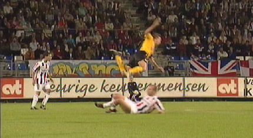

|
Willem II - Roda JC (0-1) 30 september 2006
|
Tegen de verwachting in is het Willem II dat de meeste aspiraties maakt op
een openingstreffer. Hier kan Kujovic nog net redden.
Bij deze botsing...
... raakt Vandamme behoorlijk geblesseerd.
Goed verdedigend werk van Saeijs.
Het gaat niet goed met Vandamme zodat op hij op slag van rust gewisseld
wordt voor Van Tornhout.
Roda ontsnapt. Willem II is ook in de tweede helft dreigender dan Roda.
Van Tornhout kopt op de paal na een hoekschop van Saeijs.

Invaller Nieuwendaal torpedeert Saeijs.
Dieptepass van Bodor bereikt Van Tornhout die voorgeeft.
Ramzi schiet in: 0-1, (63').
Super-Adil wordt bedolven door zijn ploegmaten.
Ontlading bij de ruim 300 meegereisde Roda-supporters.
Van Tornhout verprutst een super-kans om de wedstrijd te beslissen.
In de laatste spannende minuten wordt Bodor vervangen door Lachambre en
Oper door Sonko.
Jezus, of Allah... wat een goudhaantje...
© Koempels Pleasure Dome
|